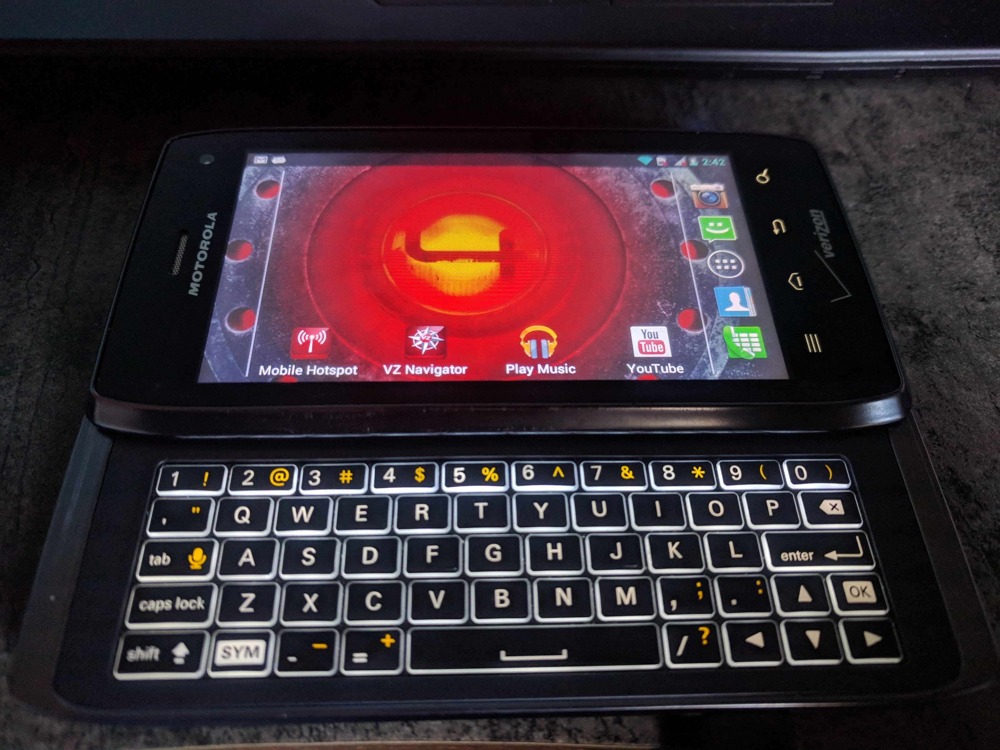

Motorola Droid 4 (motorola-maserati)
|
|
This device is still running on armhf, although the processor supports armv7. If you own it, change it and test it that way. |
|

Motorola Droid 4 |
|
| Manufacturer | Motorola |
|---|---|
| Name | Droid 4 |
| Codename | motorola-maserati |
| Released | 2012 |
| Category | testing |
| Original software | Android 4.1.2 on Linux 3.0 (launched with Android 2.3 on Linux 2.6) |
| Hardware | |
| Chipset | TI OMAP 4430 |
| CPU | Dual-core 1.2 GHz Cortex-A9 |
| GPU | PowerVR SGX540 |
| Display | 540 x 960 TFT |
| Storage | 16 GB |
| Memory | 1 GB |
| Architecture | armv7 |
{kind=link}
| USB Networking |
Works
|
|---|---|
| Flashing |
|
| Touchscreen |
Works
|
| Display |
Works
|
| WiFi |
Works
|
| FDE |
|
| Mainline |
|
| Battery |
|
| 3D Acceleration |
|
| Audio |
|
| Bluetooth |
|
| Camera |
|
| GPS |
|
| Mobile data |
|
| SMS |
|
| Calls |
|
| USB OTG |
|
| NFC |
|
| Accelerometer |
|
|---|---|
| Magnetometer |
|
| Ambient Light |
|
| Proximity |
|
| Hall Effect |
|
| Barometer |
|
| Power Sensor |
|
| Keyboard |
|
|---|---|
| Touchpad |
|
| USB-A |
|
| HDMI/DP |
|
| Ir TX |
|
| TrustZone |
|
| FOSS bootloader |
|
|
|
This phone is currently better supported by Maemo Leste, which has 3D acceleration with X.org, WiFi, and more working with mainline |
Contributors
- TheKit
- Hexarei
- MartijnBraam
Users owning this device
- Eloy ( Notes: runs pre-alpha Maemo Leste)
- Foldmorepaper ( Notes: kernel v5.1.0)
- Jja2000 ( Notes: Running Maemo-Leste)
- Linmob ( Notes: runs Maemo Leste)
- MartijnBraam
- Nieldv
- Sicelo
- Unrznbl ( Notes: using instructions I get backlit blank/black screen, will try to make a serial cable)
Rooting
The Droid 4 doesn't have an unlockable bootloader, so rooting the device requires an exploit.
The easiest exploit is called "Saferoot", which was originally intended for Samsung devices, but also works for many others, including the Droid 4. You can find a saferoot.zip file in this XDA-Developers thread:
https://forum.xda-developers.com/showthread.php?t=2565758
Download saferoot.zip , extract it somewhere, then enable USB debugging on the Droid 4 and connect it to your computer. With it connected, open a command line, cd to where you extracted the files, then run install.sh if you're on a Linux machine, or install.bat if you're on a Windows machine.
Following the on-screen instructions, you should eventually have a rooted device!
Custom Recovery: Safestrap
While there's no official version of TWRP for the maserati , there is a custom recovery based on early versions: SafeStrap!
YOU MUST ROOT AS LISTED ABOVE, FIRST!
You can download that here (make sure to get the one with maserati in the name!):
It's an APK file, so enable untrusted sources on your Droid 4 and install it. Once installed, if you're properly rooted, launching it should give you three options: Install recovery, uninstall recovery, and reboot to recovery.
Tapping "install recovery" should install the SafeStrap recovery! If it's successful, tapping "Reboot to recovery" should take you to the custom SafeStrap recovery.
Additional Info
Safestrap recovery has support for what it calls "ROM slots." At the time of this writing, you must select a non-stock slot in order to flash anything besides Android.
To repeat: DO NOT TRY TO INSTALL pmOS TO THE STOCK SLOT! IT COULD BRICK YOUR DEVICE! .
Installation
$ pmbootstrap.py init
$ pmbootstrap.py install
$ pmbootstrap.py export
Create ROM slot with minimal possible space for system, data, and cache partitions.
First flash CyanogenMod 11 to install files needed by SafeStrap for kexec.
$ wget "http://droid.cs.fau.de/cm-11.0/unofficial/cm-11-20160815-UNOFFICIAL-maserati.zip"
# Boot into safestrap recovery and go to Advanced -> ADB Sideload
$ adb sideload cm-11-20160815-UNOFFICIAL-maserati.zip
Then connect the phone via USB in SafeStrap and do the following (android-platform-tools need to be installed):
$ cd /tmp/postmarketOS-export
$ adb shell mount /system
# FIXME: you really want to backup original ramdisk.img and kernel here. At least for me Cyanogen no longer boots with modified ramdisk/kernel
$ adb push initramfs-motorola-maserati /system/etc/kexec/ramdisk.img
$ adb push vmlinuz-motorola-maserati /system/etc/kexec/kernel
$ adb shell
# In ADB shell (needed to make sure files are written before reboot):
$ umount /cache
$ umount /system
$ umount /data
$ losetup -d /dev/block/loop-cache
$ losetup -d /dev/block/loop-userdata
$ losetup -d /dev/block/loop-system
$ umount /ss
Now you can either flash motorola-maserati.img to sdcard or resize the image on host to desired size and replace userdata.img of ROM slot you created:
# FIXME: at least my resize2fs does not know about -s option; plus .img file contains partitions, not ext4 filesystem
$ resize2fs -s 2G motorola-maserati.img
$ adb shell mount /ss
$ export slot_number=1 # Number of SafeStrap slot used
$ adb push motorola-maserati.img /ss/safestrap/rom-slot${slot_number}/userdata.img
$ adb shell umount /ss
I have a brick! Help! (DANGEROUS)
So you accidentally overwrote the stock slot in SafeStrap. What should you do?
- Use Fastboot to write stock image back. Press the two volume buttons while pressing power to enter the factory bootloader. Find the files in VRZ_XT894_9.8.2O-72_VZW-18-8_CFC.xml.zip and rewrite system.img, boot.img, recovery.img, etc.
- Install kexecboot to mbm partition to avoid SafeStrap altogether and boot from SD card see droid4-kexecboot in the additional information .
Fastboot won't work due to too low a battery
- Charge battery with external LiPo charger - B+ and B- are clearly marked.
- Remove the battery, and insert pins into relevant battery terminals and give appropriate power from lab bench supply. Increasing current past a threshold (but be VERY careful) should fool the bootloader into thinking it has a well-charged battery.
- It may also be possible to charge via the rear 4-pin connector, which goes through the charging circuitry: https://forum.xda-developers.com/showthread.php?t=1887365
- Build a "factory cable" that bridges ID (micro-USB type-B pin 4) with 5V VCC (pin 1), which is how the factory flashes the devices without any battery at all.
lsmod
Module Size Used by aes_arm_bs 24576 3 crypto_simd 16384 1 aes_arm_bs cryptd 20480 1 crypto_simd aes_arm 16384 3 aes_generic 40960 1 aes_arm ccm 20480 9 qmi_wwan 28672 0 cdc_wdm 20480 1 qmi_wwan option 45056 0 usbnet 28672 1 qmi_wwan usb_wwan 16384 1 option usbserial 32768 2 option,usb_wwan snd_soc_omap_hdmi 16384 0 wl12xx 65536 0 wlcore 188416 1 wl12xx mac80211 614400 2 wlcore,wl12xx libarc4 16384 1 mac80211 sha256_generic 16384 0 libsha256 20480 1 sha256_generic sha256_arm 24576 0 cfg80211 577536 2 wlcore,mac80211 joydev 20480 0 mousedev 20480 0 evdev 24576 1 snd_soc_audio_graph_card 16384 0 snd_soc_simple_card_utils 16384 1 snd_soc_audio_graph_card pwm_vibra 16384 0 phy_generic 16384 1 phy_mapphone_mdm6600 16384 1 ff_memless 16384 1 pwm_vibra gpio_keys 20480 0 display_connector 16384 0 pwm_omap_dmtimer 16384 2 cpufreq_dt 16384 0 led_bl 16384 0 omap_aes_driver 24576 0 omap_sham 28672 0 omap4_keypad 16384 0 matrix_keymap 16384 1 omap4_keypad omap_mailbox 20480 0 ohci_platform 16384 0 omap2430 16384 0 ehci_omap 16384 0 ohci_hcd 36864 1 ohci_platform ehci_hcd 57344 1 ehci_omap st_accel_spi 20480 0 st_sensors_spi 16384 1 st_accel_spi st_accel_i2c 20480 0 st_sensors_i2c 16384 1 st_accel_i2c st_accel 20480 2 st_accel_spi,st_accel_i2c st_sensors 20480 4 st_accel_spi,st_accel_i2c,st_accel industrialio_triggered_buffer 16384 1 st_accel kfifo_buf 16384 1 industrialio_triggered_buffer w1_ds250x 16384 0 hci_uart 53248 0 btbcm 16384 1 hci_uart cpcap_battery 20480 0 cpcap_adc 16384 0 rtc_cpcap 16384 1 cpcap_pwrbutton 16384 0 bluetooth 401408 3 hci_uart,btbcm atmel_mxt_ts 32768 0 isl29028 16384 0 ecdh_generic 16384 1 bluetooth ecc 32768 1 ecdh_generic libaes 16384 5 omap_aes_driver,bluetooth,aes_arm_bs,aes_arm,aes_generic omap_des 20480 0 leds_lm3532 16384 1 leds_cpcap 16384 0 snd_soc_cpcap 32768 1 cpcap_charger 20480 0 libdes 28672 1 omap_des led_class 16384 3 leds_lm3532,leds_cpcap,led_bl lm75 20480 0 crypto_engine 16384 2 omap_des,omap_aes_driver omap_hdq 20480 0 omap_crypto 16384 2 omap_des,omap_aes_driver wlcore_sdio 16384 0 wire 32768 2 w1_ds250x,omap_hdq cn 16384 1 wire hwmon 20480 2 lm75,wire snd_soc_omap_mcbsp 24576 4 snd_soc_ti_sdma 16384 2 snd_soc_omap_mcbsp,snd_soc_omap_hdmi snd_soc_core 159744 6 snd_soc_omap_mcbsp,snd_soc_audio_graph_card,snd_soc_omap_hdmi,snd_soc_simple_card_utils,snd_soc_ti_sdma,snd_soc_cpcap snd_pcm_dmaengine 16384 1 snd_soc_core snd_pcm 98304 4 snd_soc_omap_mcbsp,snd_pcm_dmaengine,snd_soc_omap_hdmi,snd_soc_core snd_timer 28672 1 snd_pcm snd 61440 3 snd_timer,snd_soc_core,snd_pcm soundcore 16384 1 snd usb_f_rndis 24576 2 u_ether 20480 1 usb_f_rndis libcomposite 53248 10 usb_f_rndis phy_omap_usb2 16384 4 cpcap_charger phy_cpcap_usb 16384 0 industrialio 61440 11 cpcap_battery,st_accel_spi,cpcap_charger,st_sensors,phy_cpcap_usb,cpcap_adc,st_accel_i2c,st_accel,industrialio_triggered_buffer,isl29028,kfifo_buf musb_hdrc 118784 2 omap2430,phy_cpcap_usb udc_core 40960 4 musb_hdrc,u_ether,usb_f_rndis,libcomposite usbcore 196608 11 usbnet,ehci_omap,ehci_hcd,qmi_wwan,cdc_wdm,musb_hdrc,usbserial,option,ohci_hcd,usb_wwan,ohci_platform usb_common 16384 5 udc_core,musb_hdrc,libcomposite,ohci_hcd,usbcore omapdss 159744 3 cec 40960 1 omapdss panel_dsi_cm 20480 1 omapdrm 65536 1 omapdss_base 16384 3 omapdrm,omapdss,panel_dsi_cm drm_kms_helper 163840 3 omapdss_base,omapdrm,omapdss cfbfillrect 16384 1 drm_kms_helper syscopyarea 16384 1 drm_kms_helper cfbimgblt 16384 1 drm_kms_helper sysfillrect 16384 1 drm_kms_helper sysimgblt 16384 1 drm_kms_helper fb_sys_fops 16384 1 drm_kms_helper cfbcopyarea 16384 1 drm_kms_helper drm 380928 6 omapdss_base,display_connector,omapdrm,omapdss,drm_kms_helper drm_panel_orientation_quirks 16384 1 drm omap_wdt 16384 0 watchdog 20480 1 omap_wdt
See also
- #1039 WIP pull request
- KexecBoot for the Droid 4 - quite possibly more desirable than Safestrap
- booting droid 4 xt894 with current kernel - mainlining instructions with Kexecboot for at least 4.20-rc7 kernel (and serial cable how-to)
- Blog about the Droid 4
- Device package
- Kernel package